User Guide
Everything you need for a smooth day at the firm — in simple steps, with pictures.
☀ My day
Sign in to Worko
Add a task in one line
Tick it off when done
Web · Desktop · AndroidVersion 2026.11
Contents
What's in this guide
Read pages 3–6 first. They cover 90% of a normal day.
- 01Sign in3
- 02Your dashboard4
- 03Add a task in one line5
- 04Finish your day with “My day”6
- 05Find anything fast7
- 06Tasks8
- 07Clients9
- 08Compliance10
- 09Billing11
- 10Time12
- 11Reports13
- 12Team & roles (for admins)14
- 13Make it yours15
- 14On your phone16
- 15Shortcuts & help17
01 · Start
Sign in
Your admin gives you three things: a Firm ID, your email and a password.
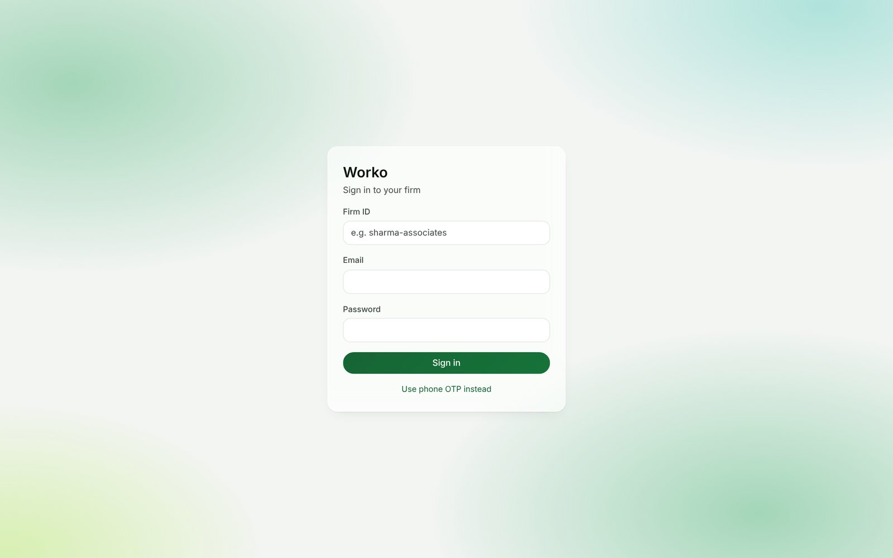
- Open Worko in your browser, the desktop app or the Android app.
- Type your Firm ID (for example
sharma-associates).
- Type your email and password, then press Sign in.
- If asked, type the 6-digit code from your authenticator app.
Tip: no password? Tap Use phone OTP instead to get a code by SMS (if your firm has SMS turned on).
02 · Home
Your dashboard
One screen tells you what matters today.
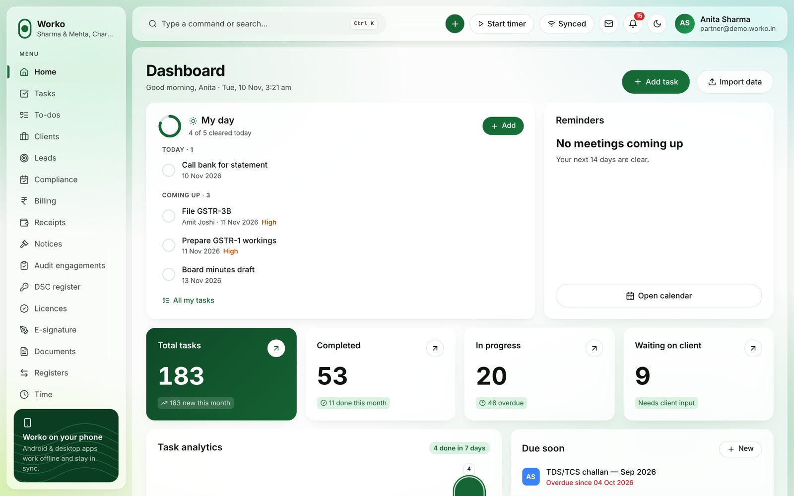
| Part | What it shows |
|---|
| My day | Your overdue, today and coming-week tasks. Tick to finish. |
| Number cards | Total, completed, in progress, waiting on client. Tap a card to see those tasks. |
| Due soon | The next deadlines across the firm. |
| Top bar | Search, + quick add, timer, sync status, messages, alerts, theme. |
Green “Synced” means everything is saved. If it says Offline, keep working — Worko saves and sends later.
03 · Fastest way to work
Add a task in one line
No long form. Just type what you'd say out loud.
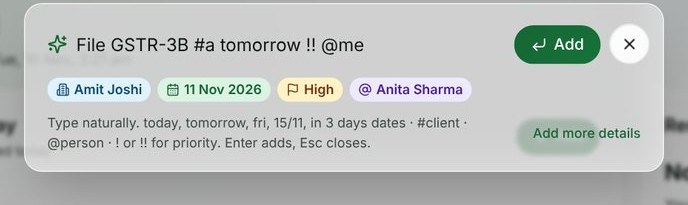
- Press N on your keyboard, or tap the green +.
- Type, for example:
File GSTR-3B #acme tomorrow !! @ravi
- Check the coloured chips, then press Enter. Type the next one.
#acme → clienttomorrow → date!! → high@ravi → person
| Dates you can type | Priority | People |
|---|
today tomorrow fri next week in 3 days 15/11 20 dec | ! high
!!! urgent | @name
@me (you) |
Need more fields? Click Add more details for the full form (service, statutory date, reviewer).
04 · Finish fast
Finish your day with “My day”
Only your work. One tap to finish.
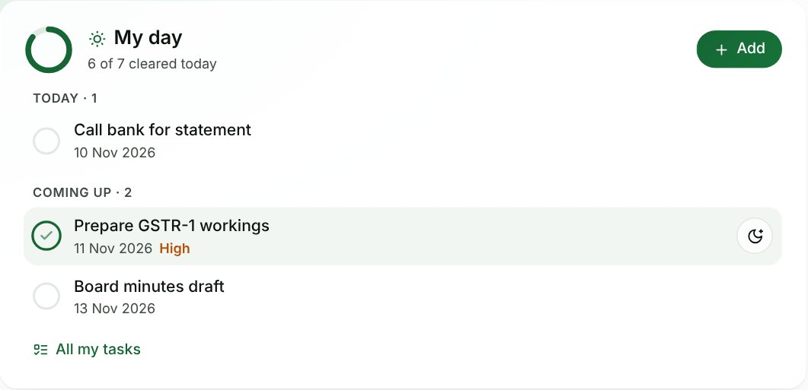
- Tick the circle when a task is done. It strikes through and slides away.
- Tap the moon to move a task to tomorrow.
- Made a mistake? Tap Undo on the message that pops up.
- Tap the task name to open all its details.
Ring at the top = how much of today you've cleared. Aim for a full circle.
Checklist not finished? Ticking opens the task so you can finish the required checks first.
05 · Search
Find anything fast
One search box opens any client, task, invoice or screen.
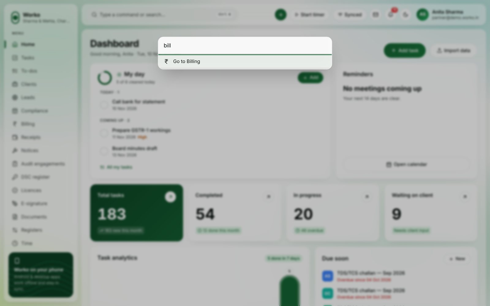
- Press Ctrl + K (⌘ + K on Mac), or click the search bar.
- Type a few letters — a client name, PAN, GSTIN, or a screen like “billing”.
- Use the arrow keys and press Enter.
Jump keys: press G then a letter, e.g. G T for Tasks.
06 · Work
Tasks
All firm work in one place. Pick the view you like.
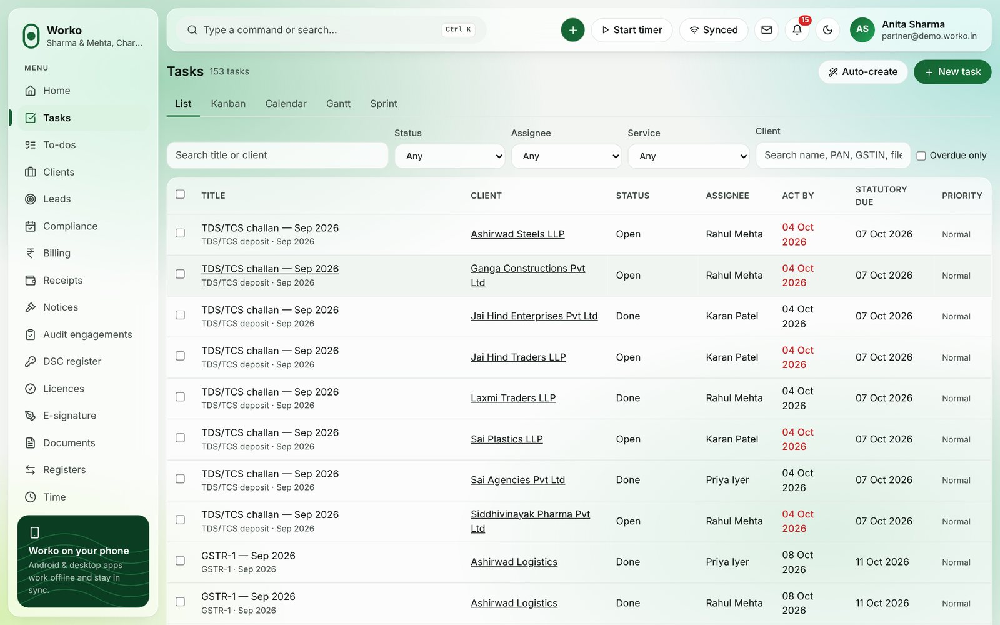
| View | Best for |
|---|
| List | Filtering and bulk changes (select rows, change status or person at once). |
| Kanban | Dragging work from Open → In progress → Review → Done. |
| Calendar | Seeing deadlines by date. |
| Gantt / Sprint | Planning the month and staff load. |
Auto-create makes all of a month's statutory tasks (GST, TDS…) for every client in one go.
07 · People you serve
Clients
Everything about a client on one page: details, tasks, documents, bills, messages.
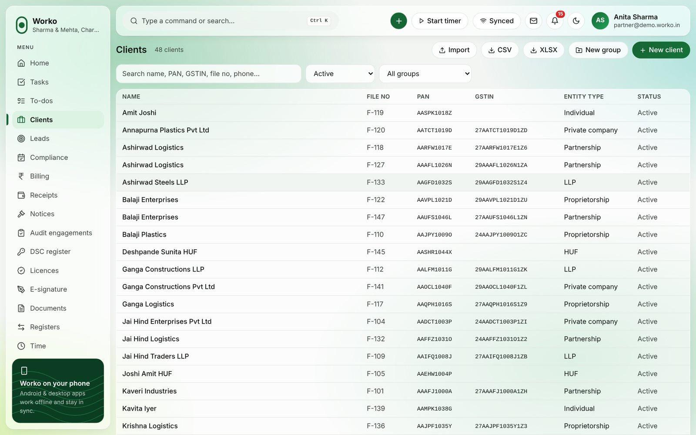
- Click New client. Type the name and PAN — Worko checks the format for you.
- Add GSTINs and registrations. Pick the services you provide.
- Open the client to see the full 360° view.
Many clients? Use Import data on the dashboard to load a spreadsheet.
08 · Deadlines
Compliance
A grid of every client against every return. Red means late.
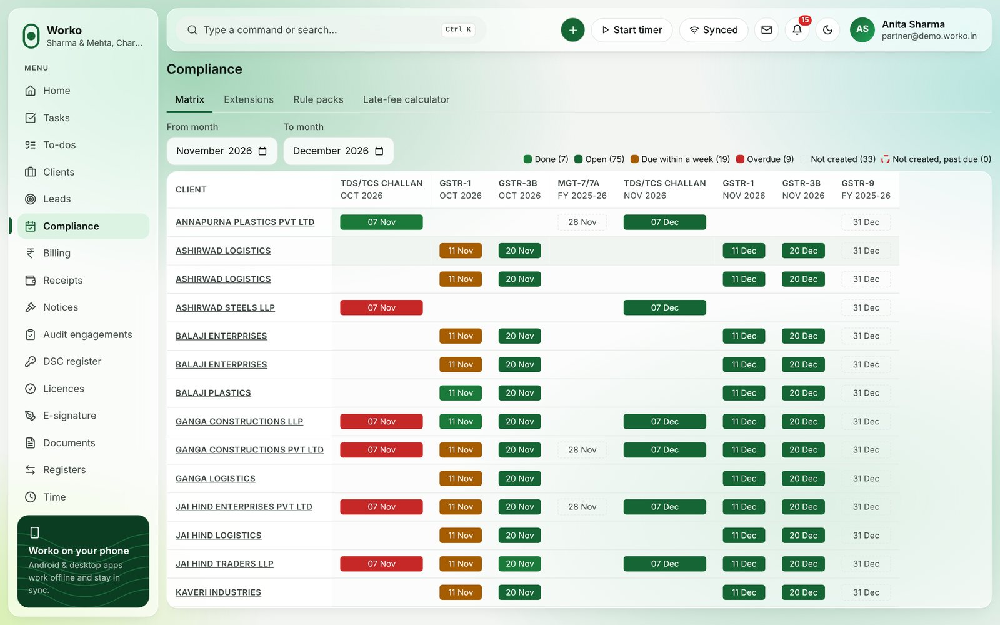
- Pick the month and the return type.
- Each cell shows status. Click a cell to open the task.
- When the government extends a date, add it under Extensions — all tasks update.
09 · Get paid
Billing
GST-ready invoices, receipts and follow-ups.
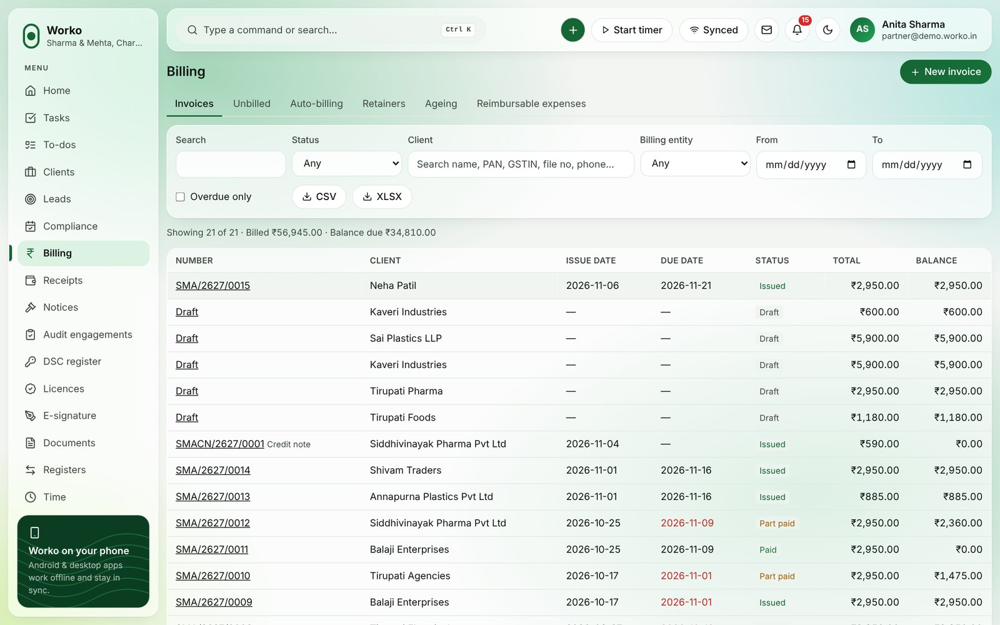
- Click New invoice, pick the client and add lines. GST splits itself (CGST/SGST or IGST).
- Issue it to give it a number. Download the PDF or send it.
- Record money under Receipts — TDS is handled.
- See who owes what in Ageing. Export to Tally anytime.
Unbilled lists finished work that has no invoice yet — nothing slips through.
10 · Hours
Time
Track hours with one click. See profit per job.
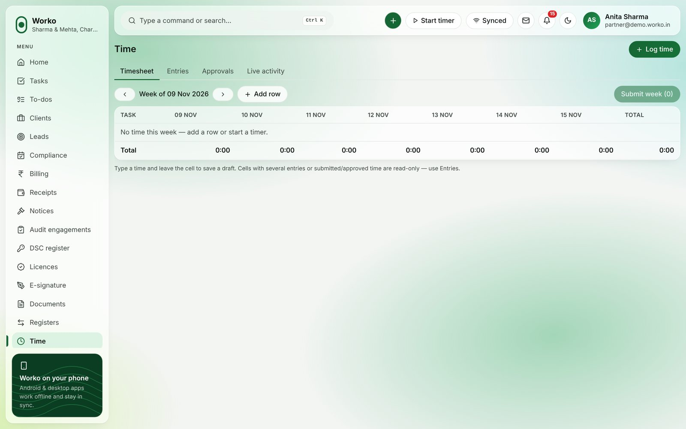
- Press Start timer in the top bar. Pick the task.
- Press Stop when done. It becomes a draft entry.
- Submit your week. Your manager approves it.
Forgot to start the timer? Add the hours by hand on the Timesheet tab.
11 · Insight
Reports
Ready-made reports, your own reports, and scheduled emails.
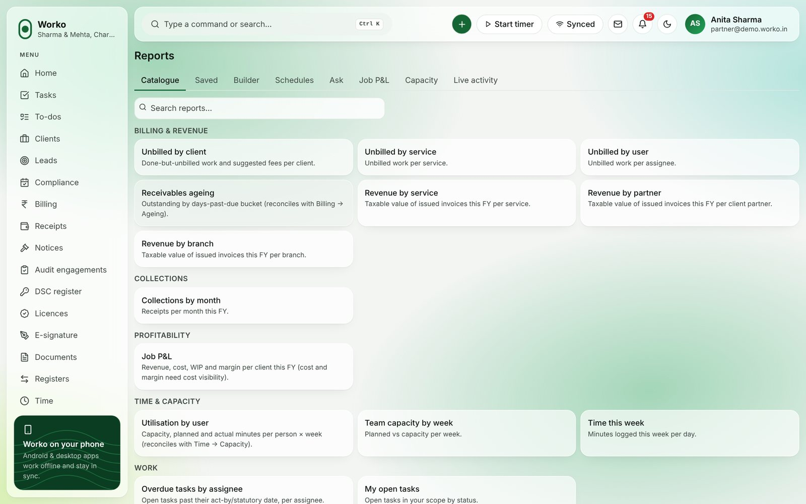
- Open a report from the Catalogue.
- Change filters and columns. Click any number to see the rows behind it.
- Export to CSV, Excel or PDF — or set it up under Schedules to arrive every week.
12 · For admins
Team & roles
Add people and decide exactly what each role can see and do.
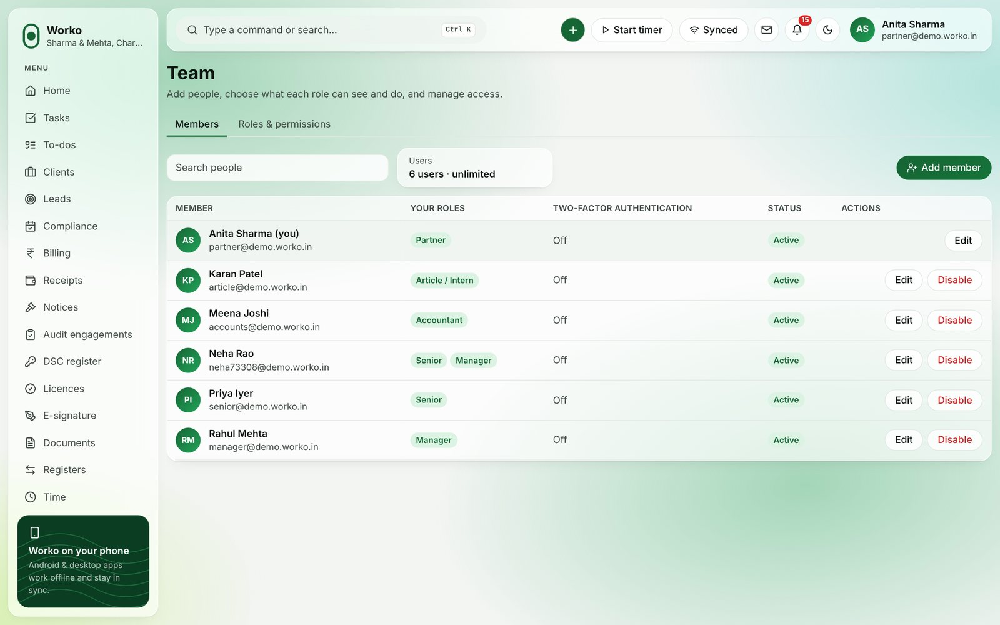
- Go to Team → Add member. Enter the name, email and role.
- Open Roles & permissions to tick what each role can view, create, edit or delete.
- Turn a person off any time when they leave.
Seat limit: your plan sets how many users you can have. The platform admin can raise it.
13 · Personal
Make it yours
Your settings follow you to every device.
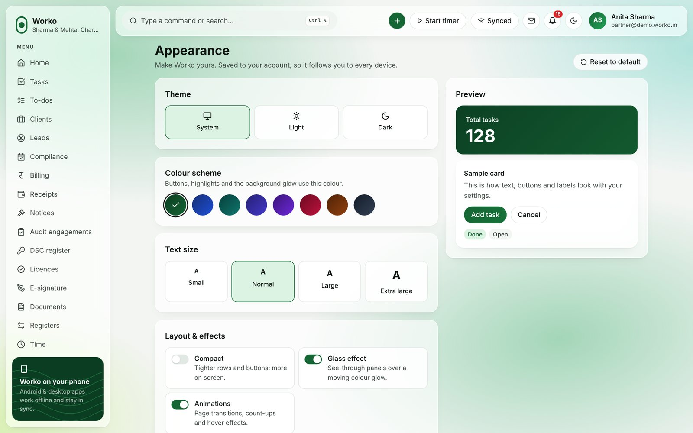
| Setting | Choices |
|---|
| Theme | System, light or dark. |
| Accent colour | 8 colours, all easy to read. |
| Text size | Small to extra large. |
| Layout | Compact rows, glass effect, animations on or off. |
| Modules | Hide menu items you never use. |
14 · Mobile
On your phone
The Android app works without internet and syncs when you're back online.
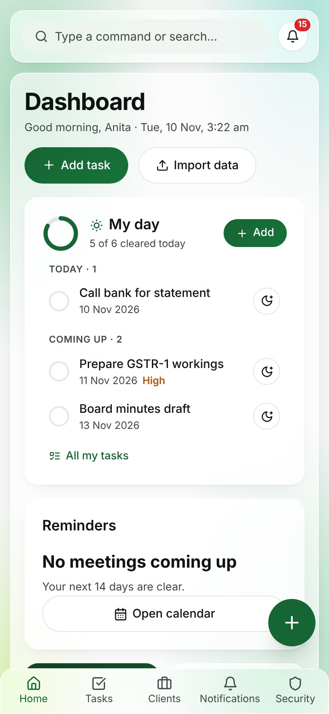
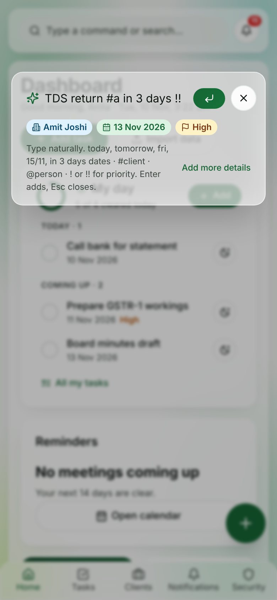
- Tap the round green + to quick-add a task.
- Use My day on Home: tick to finish, moon for tomorrow.
- The bottom bar has Home, Tasks, Clients, Inbox and More.
- Upload documents and capture signatures right from the phone.
No signal? Keep working. A small strip shows how many changes are waiting to sync.
15 · Cheat sheet
Shortcuts & help
| Keys | Does |
|---|
| N | Quick add a task |
| Ctrl + K | Search everything |
| G then H / T / C / D | Go to Home / Tasks / Clients / Documents |
| Enter · Esc | Save · close |
Something not right?
| Problem | Try this |
|---|
| “Details did not match” | Check the Firm ID spelling. Ask your admin to reset your password. |
| Can't see a client or menu item | Your role may not include it. Ask your admin, or check Appearance → Modules. |
| A module says “not available” | It needs an outside service (payments, WhatsApp, e-sign, AI). Your admin can connect it. |
| Changes not showing on another device | Check the sync badge in the top bar; tap it to sync now. |
| Can't mark a task done | Finish the required checklist items, or the UDIN for audit tasks. |
Still stuck? Your firm admin can see an activity log of every change and help you quickly.